- 우리나라 결핵 발생률은 2015년 입구 십만 명당 79명에서 2020년 49명으로 감소하였고, 결핵 사망률은 2015년 인구 십만 명당 5.3명에서 2020년 3.8명으로 감소하였으나 여전히 OECD 가입국 중 결핵 발생률은 1위이다. 특히 해외에서 유입되는 결핵 환자의 증가와 집단 결핵 발생이 지속되고 있어 다각적인 국가결핵관리사업의 추진과 노력이 요구된다(질병관리청, 국가결핵관리지침. 2022).
- 2021년 12월 기준 외국인 근로자(E-9, H-2) 체류 인원은 343,222명으로 매년 평균 47만명이 체류하고 있으며, 인력난이 심각한 중소기업에서 비전문취업자격(E-9) 혹은 특례고용 방문 취업 자격(H-2)으로 종사하고 있다.
- 외국인 근로자들이 종사하는 회사의 규모(종업원 수)를 살펴보면, 9인 이하 사업장에서 일하고 있는 응답자가 42.2%, 10인~29인 26.8%, 30인~49인 10.1%, 50인~299인 17.7%, 300인 이상이 3.0%로 나타났으며, 대부분 외국인 근로자가 50인 미만 사업장에서 근무하고 있다는 것을 알 수 있다(법무부, 2021 체류 외국인 실태조사).
국가별 외국인 근로자는 네팔 25,000명, 캄보디아 24,000명, 태국과 미얀마 각각 17,000명, 베트남 16,000명, 인도네시아 15,000명, 필리핀 14,000명 순서로 체류하는 것으로 나타나 세계적으로 결핵환자 발생률이 높은 동남아시아(44%, WHO, 2019) 근로자들이 주를 이루며, 결핵 고위험국에서 유입되는 외국인 근로자 수의 증가는 국내 결핵문제를 해결하지 못한 상황에서 해외 유입 감염자까지 더해지는 문제가 우려되는 상황이다.
- 질병관리청에 따르면 외국인 결핵 환자 수가 2010년 678명에서 2020년 1,076명으로 10년 사이 1.6배 증가하였다. 이는 코로나19로 인해 출국 등 외국인 체류 인원수가 10만명 줄어든 것을 감안하면 결핵 환자 수는 체류 인원수 대비 2배로 증가하였을 것으로 사료된다. 이는 같은 기간 국내 결핵 환자 수가 36,305명에서 19,933명으로 감소한 것과는 대조적이다.
[그림1-1] 외국인 결핵 환자 수 및 국내(한국인) 결핵 환자 수(질병관리청, 2020)
- 2013년 코리안 드림을 꿈꾸며 한국에 불법으로 체류하던 30대 네팔 남성이 병원을 찾았고 병명은 결핵이었다. 불안정한 근무환경으로 인해 진료비를 낼 수 없었던 그는 치료를 중단했고 연락두절되었다. 2년 후인 길거리에서 객혈을 하다 쓰러져 응급실로 옮겨져 ‘다제내성 결핵’을 진단받았다. 남성은 중환자실의 막대한 진료비를 감당하기 어려웠고 결국 정부 지원을 받을 수 있는 병원으로 이송되어 치료를 받았다. 서해숙 서울시 서북병원 진료부장은 “인간의 존엄성, 의학적 판단, 사회적 비용문제 등 불법체류 결핵환자에 대한 대책이 미흡하다”고 지적했다(쿠키뉴스, 2018.03.21.).
외국인 근로자들은 결핵이 발생하면 추방한다는 생각에 질병을 숨기려는 경향이 강하다. 또한 소규모 사업장에서 종사하는 불법체류자들의 집단생활과 은폐되어있는 환경은 특히 감염에 취약하며 언어 등 정보를 얻기 힘든 문제로 의료사각지대에 있는 이들에게 올바른 정보를 제공하여 보건관리를 받을 수 있도록 해야 한다.
- 따라서 시간적 제약, 사회적 편견 등으로 보건소 등 결핵관리 기관을 이용하기 어려운 소규모 사업장의 외국인 근로자 대상으로 결핵예방 홍보·교육이 필요하다.
보건관리의 사각지대에 있는 소규모 사업장과 외국인 근로자 특성을 고려한 방문형 결핵예방 홍보·교육 제공과 더불어 국가 및 지역사회 자원 연계를 통한 치료 지원 등 적극적인 결핵예방 및 관리 활동이 요구된다.
사업추진 체계
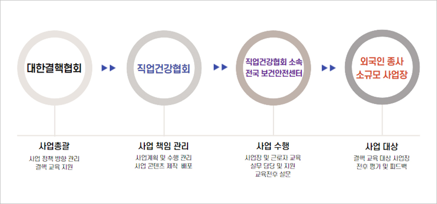
[그림2-1] 사업장 결핵관리 추진 체계
사용내용 및 방법
1)목표
-
소규모 사업장 결핵교육 및 사전·사후 조사 : 300개소, 1,200명 이상 :
인천, 부천, 경기동부, 경기북부, 경기남부, 충남, 충북, 대구 지역 사업장 대상 - 소규모 사업장 결핵검진 및 예방 홍보 캠페인 : 3회 이상
- 결핵 지식 · 태도 · 행위 의도 20% · 6% · 6% 이상 향상
2)수행 방법
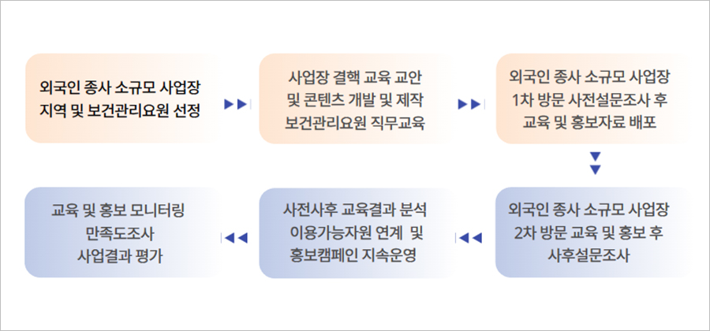
[그림2-2] 사업장 결핵예방 교육 수행 흐름
사업추진 결과
1) 홍보물 제작 및 배포 : 사업장 직접 방문 교육 후 자료 배포
-
-결핵협회 지원 홍보물 배포(마스크 2,000개, 아쿠아밴드 2,000개)
-
-홍보물 제작 및 배포(사업주 리플렛 600부, 근로자용 리플렛 2,500부, 한국어 스티커 1,000부,
영어 스티커 1,000부, 마스크·레모나세트(마스크1장+레모나5포) 2,500개, 레모나 400세트) -
-홍보실적: 총 12회(언론보도 6회, SNS 6회)
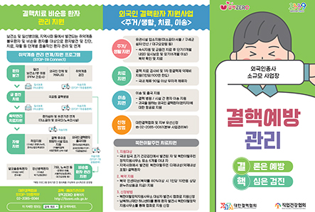
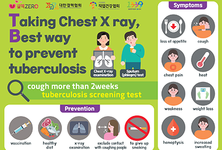
 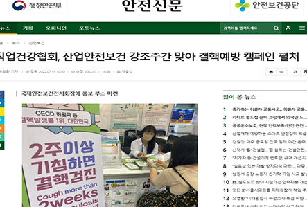
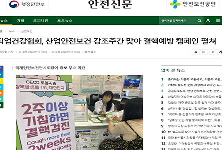
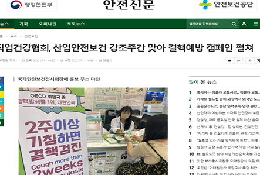
2) 외국인 종사 소규모 사업장 결핵예방 교육 및 홍보
-
-사업장 총 300개소 각 3회 방문 총 900회 방문 교육 및 홍보
-
-총 대상 인원 4,625명 / 외국인 근로자 1,441명
-
-교육 전·후 설문조사 인원 1,528명
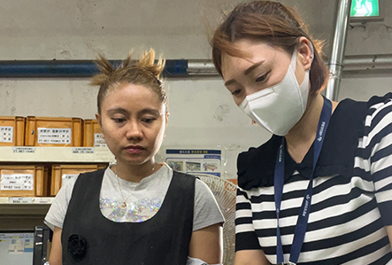
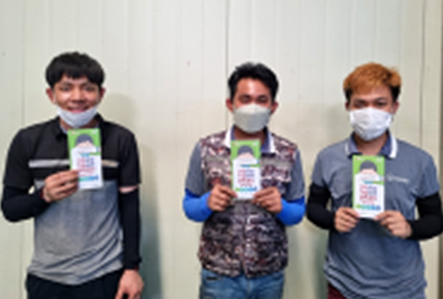
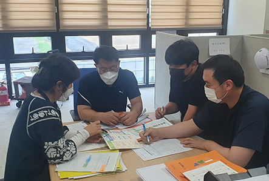
3) 사업주 및 외국인 근로자 대상 캠페인 5회
-
-국제안전보건전시회, 보건안전페어, 제주범도민안전체험한마당 방문 근로자 대상 캠페인 진행
-
-CJ대한통운 대전허브터미널 근로자 및 협력사 근로자 대상 캠페인 진행
-
-대불산업단지 외국인 근로자 대상 검진 및 캠페인 진행
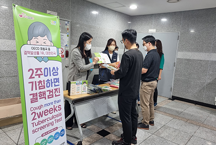
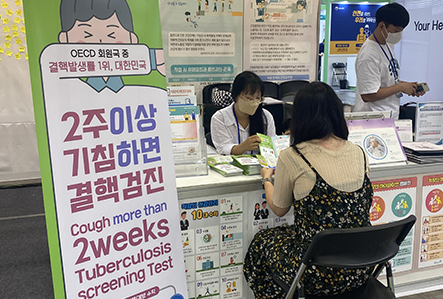
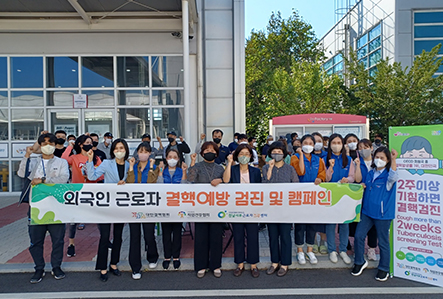
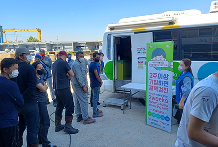
4) 사업장 결핵예방 교육 전후 설문조사 분석
-
-사업장 300개소 관리자, 근로자 1,528명
-
-결핵 지식·태도·행동 의도 8.4% ·15.6% ·16% 이상 향상
- 근로자 결핵 관리 교육 시행 결과, 지식 점수(5점 만점)가 교육 전 평균 4.17점, 교육 후 4.59점으로 0.42점 상승한 것으로 나타남(p<.001).
| 구분 | 1차 | 2차 | 우수사례 |
|---|---|---|---|
| 목표 사업장 수 | 2,000 | 300 | 10 |
| 사업장 수(개소) | 2,001 | 309 | 11 |
| 추진율 | 100% | 103% | 110% |
* 0점 ~ 5점
<표 1-1> 교육 전후 근로자의 결핵에 관한 지식 변화
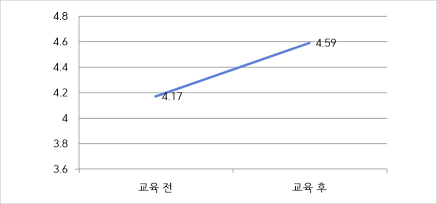[그림 3-1] 교육 전후 근로자의 결핵에 관한 지식 변화
- 근로자의 결핵 관리에 관한 태도점수(5점 만점)는 교육 전 평균 3.59점에서 교육 후 4.37점으로 0.78점 상승함(p<.001).
| 구분 | 1차 | 2차 | 우수사례 |
|---|---|---|---|
| 목표 사업장 수 | 2,000 | 300 | 10 |
| 사업장 수(개소) | 2,001 | 309 | 11 |
| 추진율 | 100% | 103% | 110% |
* 0점 ~ 5점
<표 1-2> 교육 전후 근로자의 결핵 관리에 관한 태도 변화
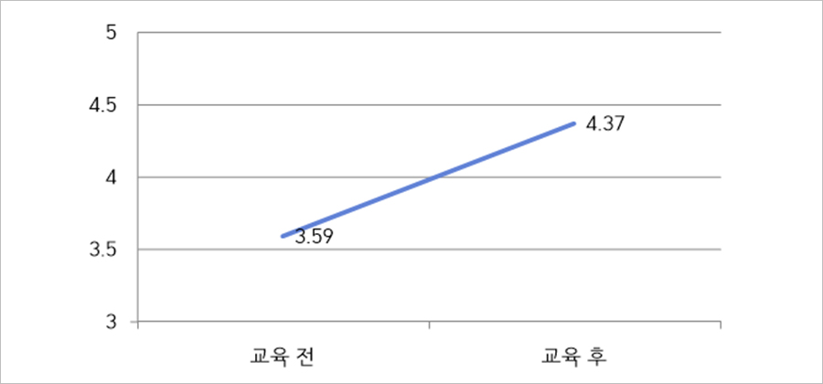[그림 3-2] 근로자의 태도 변화
- 근로자의 결핵예방 행위 의도 점수(5점 만점)는 교육 전 평균 3.67점에서 교육 후 평균 4.47점으로 0.8점 상승함(p<.001).
| 구분 | 1차 | 2차 | 우수사례 |
|---|---|---|---|
| 목표 사업장 수 | 2,000 | 300 | 10 |
| 사업장 수(개소) | 2,001 | 309 | 11 |
| 추진율 | 100% | 103% | 110% |
* 0점 ~ 5점
<표 1-3> 교육 전후 근로자의 결핵예방 행위 의도 변화

[그림 3-3] 근로자의 결핵예방 행위 의도 변화
[사업장 교육 보고서]
[근로자 결핵예방 교육 전 설문조사]_앞면
[근로자 결핵예방 교육 전 설문조사]_뒷면
[근로자 결핵예방 교육 후 설문조사]
기대효과
- 외국인 종사 소규모 사업장의 결핵 관리에 대한 지식증대 및 태도 변화
소규모 사업장 사업주 및 안전보건 담당자의 결핵 예방관리에 대한 지식증대는 사업장 근로자의 등록외국인뿐만 아니라 미등록 외국인의 결핵예방에 대한 인식개선을 고취시킬 수 있으며, 이는 결핵 환자 발생 시 신속히 대처하여 결핵 집단 발병을 사전에 차단, 현장 대응력을 강화하는데 기여할 수 있다.
- 외국인 종사 소규모 사업장의 결핵 관리 능력 향상
사업장 내 결핵예방 및 감염관리 등 보건교육을 지원하여, 사업주의 법적 의무사항임을 인지하게 하고 외국인 노동자의 안전을 보장한다.
보건관리의 사각지대인 소규모 사업장의 외국인을 ‘찾아가는 결핵예방 교육 서비스’를 시행함으로써 관리의 중요성을 인식하고 자율적 관리 능력을 높일 것으로 기대한다.
보건관리의 사각지대인 소규모 사업장의 외국인을 ‘찾아가는 결핵예방 교육 서비스’를 시행함으로써 관리의 중요성을 인식하고 자율적 관리 능력을 높일 것으로 기대한다.
- 결핵에 대한 인식개선
- - 결핵 교육과 캠페인을 단위사업장으로 시행하고, 홍보를 위한 대규모 전시회와 학술대회 부스운영으로 확대하여 사업장과 사업주, 근로자의 인식개선에 기여한다.
- - 외국인 종사 소규모 사업장 관리자 및 근로자가 결핵예방 행동 습관화의 중요성을 인지하고, 자체적으로 교육 및 홍보를 통해 개선이 이루어지도록 한다.
- - 잠복 결핵 교육을 통한 환자의 조기 발견과 적극적 관리를 가능하게 한다.
- - 외국인 종사 소규모 사업장의 열악한 작업환경과 보건교육의 부족을 결핵예방 등 교육을 통해 집단 발병을 차단시켜 사회적 의료재정 안정화에 이바지한다.